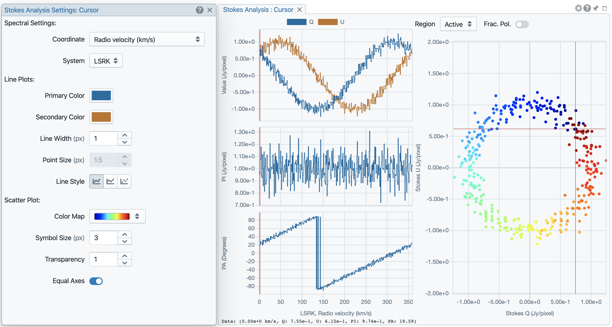
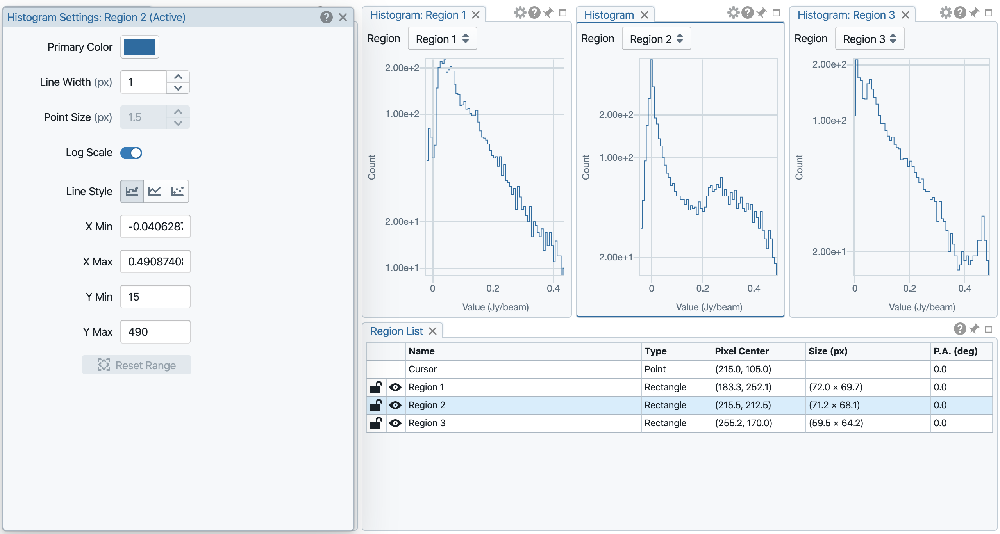

Image cube analysis tools¶
With version 1.3, CARTA provides the following widgets for image cube analysis:
Widget
region list: to view and configure region properties
spatial profiler: to view x and y spatial profiles at the cursor position
spectral profiler: to view spectral profile from a region of interest
histogram: to view histogram from a region of interest
statistics: to view basic statistics from a region of interest
Stokes analysis: to view basic polarization quantities
Region of interest¶
As of v1.3, CARTA supports the following region types:
rectangle (rotatable)
ellipse (rotatable)
square (rotatable; as a special case of rectangle; “shift” key + drag)
circle (as a special case of ellipse; “shift” key + drag)
point
polygon
The creation and modification of regions are demonstrated in the section Mouse interactions with region of interest. To create a region, use the region button at the bottom-right corner of the image viewer, then use cursor to draw a region. CARTA allows regions to be created even if the region is outside the image. Keyboard shortcuts associated with regions are listed below.
macOS |
Linux |
|
|---|---|---|
Region properties |
double-click |
double-click |
Delete selected region |
del / backspace |
del / backspace |
Toggle region creation mode |
C |
C |
Deselect region |
esc |
esc |
Switch region creation mode |
cmd + drag |
ctrl + drag |
Symmetric region creation |
shift + drag |
shift + drag |
Pan image (inside region) |
cmd + click / middle-click |
ctrl + click / middle-click |
Toggle current region lock |
L |
L |
Unlock all regions |
shift + L |
shift + L |
Tip
“backspace” does not delete a region…
If using CARTA remote mode in Firefox on MacOS, you may find the “backspace” key navigates back a page instead of removing a region. This behaviour can be prevented by modifying your Firefox web browser settings:
Enter about:config in the address bar.
Click “I accept the risk!”
A search bar appears at the top of a long list of preferences. Search for “browser.backspace_action”
It will likely have a value of 0. Double click it, and then modify it to a value of “2”.
Close the about:config tab and now backspace will no longer navigate back a page.
All created regions are listed in the region list widget with basic region properties. To select a region (region state changes to “selected”), simply click on the region in the image viewer, or click on the region in the region list widget. To modify the properties of a selected region, double-click on a region in the image viewer or a region in the region list widget. The color, line style, name, location, and shape, of a region are all configurable with the region property dialogue. To de-select a region, press “esc” key. To delete a selected region, press “delete” or “backspace” key. The activated region can be locked by pressing “L” key or by clicking the “lock” icon in the region list widget or region property dialogue. When a region is locked, it cannot be modified (resize, move, or delete) with mouse actions and the “delete” or “backspace” key. A locked region, however, can still be modified or delected via the region property dialogue. Locking a region could help the stituation when users want to modify overlapping regions, or could prevent modifying a region accidentally. The “eye” icon is to show the corresponding region at the center of image view.

CARTA checks if a polygon is simple or complex. If a polygon is detected as complex, its color will be in pink as a warning. Spectral profile, statistics, or histogram of a complex polygon can still be requested. However, the outcome may be beyond users’ expectation. The enclosed pixels depend on how a complex polygon is constructed. Please use complex polygon with caution.
Region of interest enables practical image cube analysis through statistics, histogram, and spectral profiler widgets. When a region is selected, the region associated widgets will be highlighted with a persistent blue box as demonstrated below.
As of v1.3, CARTA supports basic region import and export capability. Regions, in world coordinate or in image coordinate, can be exported to a text file or imported from a text file. To import a region file, use the menu File -> Import regions.

To export regions to a region file, use the meun File -> Export regions. All regions, except cursor, will be exported.

As of v1.3, CASA region text format (.crtf) and ds9 region text formate (.reg) are supported with some limitations. Currently only the 2D region defination is supported. Other properties, such as spectral range, reference frame, or decoration (line style, line width, etc.) will be supported in future releases.
The currently supported CRTF region syntax is summerized below:
Rectangle
box[[x1, y1], [x2, y2]]
centerbox[[x, y], [x_width, y_width]]
rotbox[[x, y], [x_width, y_width], rotang]
Ellipse
circle[[x, y], r]
ellipse[[x, y], [bmaj, bmin], pa]
Polygon
poly[[x1, y1], [x2, y2], [x3, y3], …]
Point
symbol[[x, y], .]
Please refer to https://casa.nrao.edu/casadocs/casa-5.6.0/imaging/image-analysis/region-file-format for more detailed descriptions about the CRTF syntax.
The currently supported ds9 region syntax is summerized below:
Rectangle
box x y width height angle
Ellipse
ellipse x y radius radius angle
circle x y radius
Polygon
polygon x1 y1 x2 y2 x3 y3 …
Point
point x y
Please refer to http://ds9.si.edu/doc/ref/region.html for more detailed descriptions about the ds9 region syntax.
Warning
In v1.3, region is registered to individual image (just like v1.2) even if the image is matched to other images in world coordinates. This limitation will be removed in v1.4, so that users can request analytics data from all matched images in the same region.
Spatial profiler¶
Spatial profiler provides the spatial profiles of the current image at the cursor position. When the cursor is moving on the image, profiles derived from the full resolution raster image are displayed. The “F” key will disable or enable profile update. When cursor update is disabled, a marker “+” will be placed on the image to indicate the position of the profiles taken.
When displaying a spatial profile with the number of pixels more than the number of screen pixels of the spatial profiler widget, a decimated profile will be derived and displayed to users as an enhancement of performance. Min/max decimation of a profile is adopted to ensure profile features are preserved. In other words, positive and negative peaks should stay at the same screen pixels just like displaying the full resolution profile. When users keep zooming in the profile, decimation with narrower and narrower interval is applied dynamically. Full resolution profile is displayed when the number of screen pixels is more than the number of pixels of the profile to be displayed.
The interactions of the spatial profiler widget are demonstrated in the section Mouse interactions with charts. The red vertical bar indicates the pixel where the profile is taken. The bottom axis shows the image coordinate, while optional world coordinate is displayed on the top axis. Extra options to configure the profile plot are available in the spatial profiler settings dialogue which is launched by clicking the “cog” icon at the top-right corner. The option “Show Mean/RMS” will adopt the data in the current view to derive a mean value and an rms value, and visualize the results on the plot. Numerical values are also displayed at the bottom-left corner. The profile can be exported as a png image or a text file in tsv format via the buttons at the bottom-right corner.
When the cursor is on the image in the image viewer, the pointed pixel value (pixel index and pixel value) will be displayed at the bottom-left corner of the spatial profiler. When the cursor is on the spatial profiler graph, the pointed profile data will be displayed instead.

Note
In future release, the following features will be supported:
More flexibilities on how mean and rms values are derived in the plot
Profile fitting capability
Profile along a line segment, polyline, or an arbitary curve
Spectral profiler¶
Spectral profiler provides the spectral profile of the current image cube at the selected region. The default region is set to “Cursor”. The “F” key will disable or enable cursor profile update. When cursor update is disabled, a marker “+” will be placed on the image to indicate the position of the profile taken.
When requesting a spectral profile, a common disappointing user experience is that users may have to wait for an unknown amount of time to see the final result if the image cube is large. As an improvement on this aspect, CARTA supports progressive update of spectral profile. Partial profiles will be periodically delivered to users while the full profile calculations are still ongoing.
When the property of a region (cursor or a regular region) is modified while the profile of the original region is being updated, the partial profile will disappear and a new partial profile cooresponding to the new region will start updating. If users modify the request of a spectral profile via the spectral profile widget before it is fully delivered, the original profile calculations will be cancelled and new profile calculations will start. In short, now CARTA should just focus on calculating and showing the profiles that users pay attention to. If a profile is no longer needed to be shown on the screen, the profile calculation will be cancelled immediately, instead of blocking and queueing up new profile requests.
When displaying a spectral profile with the number of channels more than the number of screen pixels of the spectral profiler widget, a decimated profile will be derived and displayed to users as an enhancement of performance. Min/max decimation of a profile is adopted to ensure profile features are preserved. In other words, positive and negative peaks should stay at the same screen pixels just like displaying the full resolution profile. When users keep zooming in the profile, decimation with narrower and narrower interval is applied dynamically. Full resolution profile is displayed when the number of screen pixels is more than the number of pixels of the profile to be displayed.
When regions are created, the spectral profiler widget can be configured to display a profile from a specific region with the “region” dropdown menu. The default of the “region” dropdown is “Active” which points to the current active (selected) region. If no region is active, it defaults to cursor region. Additional statistic types to compute the region spectral profile are available with the “statistic” dropdown menu (default to mean). If the image cube has multiple Stokes, the “Stokes” dropdown menu will be activated and defaulted to “current” which is synchronized with the selection in the animator. To view a specific Stokes, select with the “Stokes” dropdown menu.
Multiple spectral profile widgets can be configured to display different region spectral profiles. The widget with the selected region will be highlighted with a persistent blue box.

The interactions of the spectral profiler widget are demonstrated in the section Mouse interactions with charts. The red vertical bar indicates the channel of the image displayed in the image viewer. Clicking directly on the spectral profiler graph will change the displayed image to the clicked channel. Alternatively, the red vertical bar is draggable and acts just like the animator slider.
The bottom axis shows the spectral coordinate, Extra options to configure the profile plot are available in the spectral profile settings dialogue which can be launched by clicking the “cog” icon in the top-right corner. In the dialogue, users may select a different spectral convention (e.g., optical velocity) and a different reference system (e.g., TOPO). The option “Show Mean/RMS” will adopt the data in the current view to derive a mean value and an rms value, and visualize the results on the plot. Numerical values are also displayed at the bottom-left corner. When the cursor is on the image in the image viewer, the pointed pixel value (frequency or velocity or channel index, and pixel value) will be displayed at the bottom-left corner of the spectral profiler. When the cursor is on the spectral profiler graph, the pointed profile data will be displayed instead. The profile can be exported as a png image or a text file in tsv format via the buttons at the bottom-right corner.

Note
In future releases, the follow features will be supported:
More flexibilities on how mean and rms values are derived
Profile fitting
Line identification toolkit
Intensity unit conversion
Stokes analysis widget¶
Stokes analysis widget allows users to view basic polarization quantities of a multi-channel (number of channel > 1), multi-Stokes (IQU or IQUV) cube efficiently. The widget includes the following plots:
Stokes Q intensity and Stokes U intensity over the spectral axis
Linearly polarized intensity over the spectral axis
Linear polarization angle over the spectral axis
Stokes Q intensity versus Stokes U intensity
The profiles can be zoomed and panned with mouse similar to the spatial profile widget or the spectral profile widget (Mouse interactions with charts). The Stokes Q versus Stokes U scatter plot is color-encoded from red to blue with increasing frequencies. The profiles can be requested at the cursor position (single pixel) or over a region of interest. Fractional polarization quantities are also supported. Examples are given in the following figures. The first one is from real ALMA data, while the second one is from an artifical Stokes cube.


When profiles are zoomed, the scatter plot will highlight those channels remaining in the profile view. Similarly, when scatter plot is zoomed, the profile plot will highlight those channels remaining in the scatter plot view.
Additional options to customize the plots in the Stokes analysis widget are provided in the settings dialogue which can be launched by clicking the “cog” icon at the top-right corner.
Statistics widget¶
Statistics widget allows users to see statistics with respect to a selected region. The “Region” dropdown menu can be used to select which region statistics to be displayed. The default is “Active” which means the current active (selected) region. If no region is active, it defaults to the entire image of the displayed channel to compute statistics. Multiple statistics widgets can be created to display statistics of different regions as demonstrated below. The widget with the selected region will be highlighted with a persistent blue box.

Histogram widget¶
Histogram widget allows users to visualize data in a histogram with respect to a selected region. The “Region” dropdown menu can be used to select which region histogram to be displayed. The default is “Active” which means the current active (selected) region. If no region is active, it defaults to the entire image of the displayed channel to construct a histogram. Multiple histogram widgets can be created to display histograms of different regions as demonstrated below. The widget with the selected region will be highlighted with a persistent blue box.

Additional options to customize the histogram in the histogram widget are provided in the settings dialogue which can be launched by clicking the “cog” icon at the top-right corner.
Note
With v1.3, histogram bin width and bin count are automatically decided. Enhancement of the histogram widget, including histogram fitting, will be available in future releases.